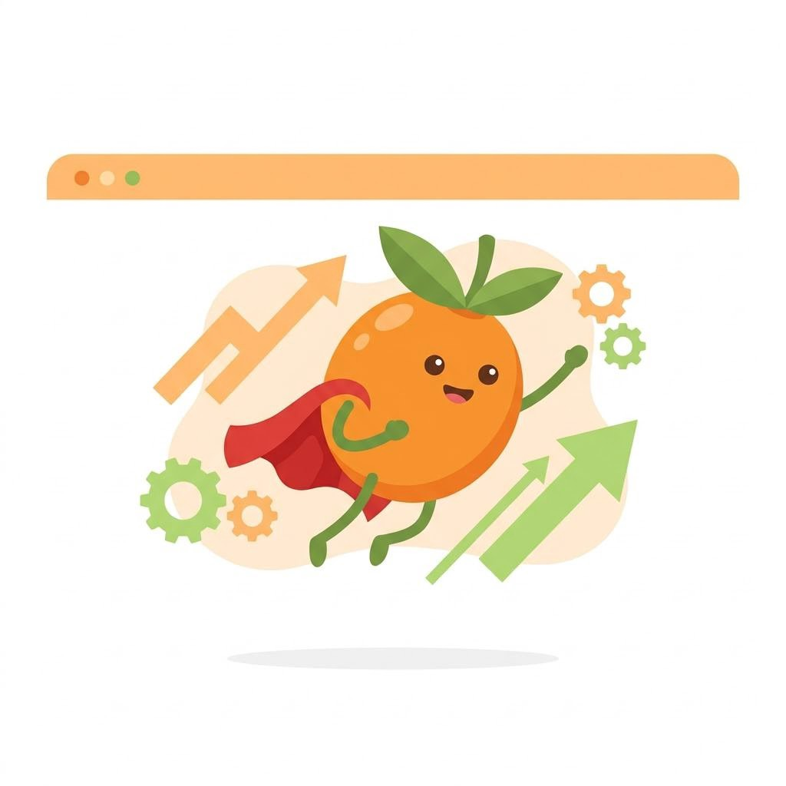
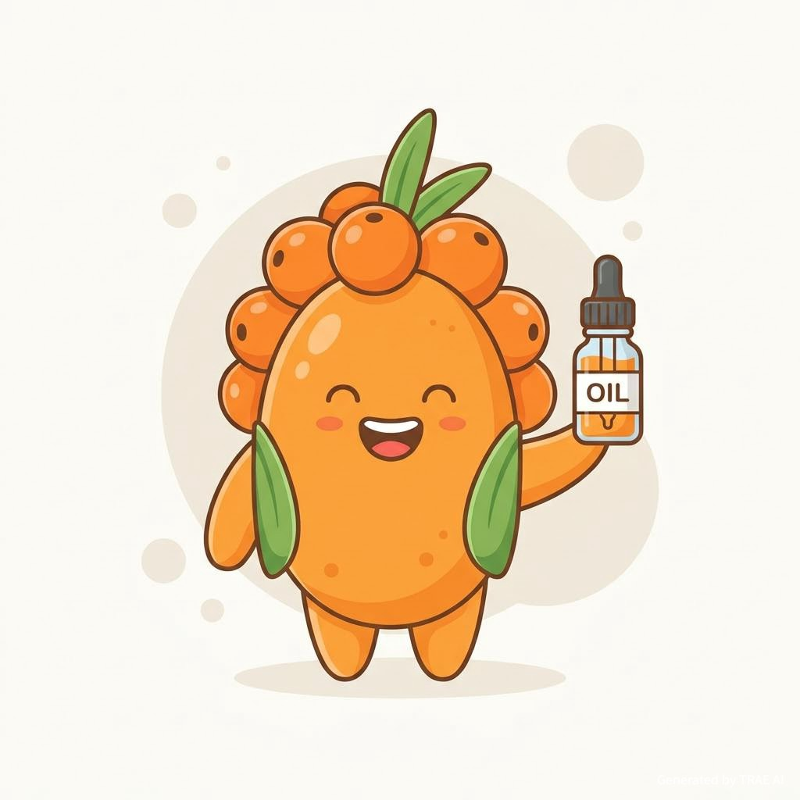
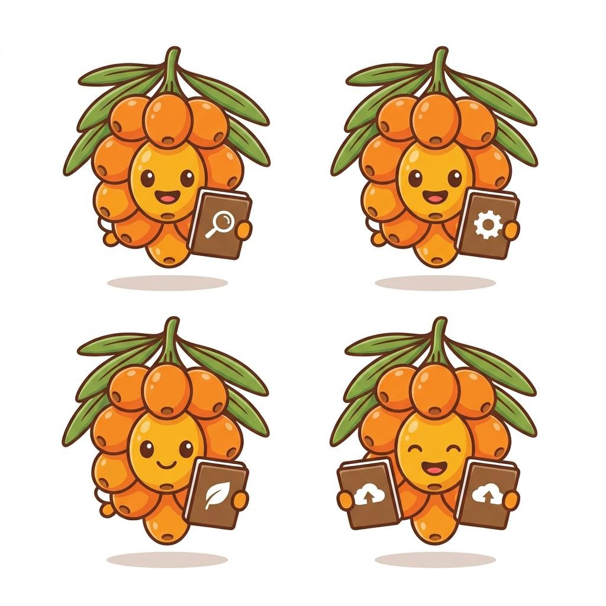

产品溯源查询
输入溯源码/批次号，查看该瓶产品对应的采摘信息、产地环境、加工节点与质检摘要。
JY-2026-0001、JY-2026-0002、JY-2026-0003
溯源结果
我们做的不只是“卖货”
棘遇以“生态修复 + 高精技术 + 数字透明”为核心，把黄土高原的生态价值写进每一次消费决策里。
品牌故事
棘遇起源于一个朴素的愿望：让“生态卫士”沙棘，不止停留在荒坡绿化的功劳簿上，也能成为真正惠及农户、消费者与环境的高价值产业。
战略背景
紧扣黄河流域生态保护、乡村振兴与健康中国 2030 等国家战略，把“绿起来”进一步走向“富起来”。
项目定位
立足陕西 500 万亩沙棘林资源，构建“生态修复 + 高精技术 + 数字透明”的全产业链协同模式。
品牌定位
黄土高原生态奇迹的价值开发者。
三大产品与服务矩阵
我们围绕三件事做出一套完整体验：沙棘原浆、沙棘油与溯源平台。既好喝、也更安心——每一口都能查得到“来龙去脉”。
沙棘价值
沙棘不仅耐旱耐盐碱、适合黄土高原生态修复，也拥有极高营养密度与成分潜力，是功能性食品与药妆原料的重要来源。
生态修复价值
固土保水、抗风沙、改善荒漠化扩展，是黄土高原重要“生态卫士”。
生态参与价值
让消费者“买得到、看得到、查得到”，每一次选择都更安心，也更有意义。
生态价值
沙棘是“三北防护林”“退耕还林”等工程的重要树种，能有效固土保水、改善荒漠化扩展。棘遇把产地生态修复成果与产品价值深度绑定，让消费行为转化为生态参与。
产业价值
通过高精提取与标准化品控，把“非标农产品”转化为可复用的高价值原料；同时以数字化溯源提升信任，减少“认知断层”，形成品牌溢价。
产品成分
以沙棘原浆与沙棘油为核心，主打清爽口感与关键活性成分，成分信息清晰可见。
成分
注：以上为演示用成分结构示例；实际含量以对应批次的检测报告为准（可在“产品溯源”页查看）。
营养与成分潜力
适用于功能性食品与药妆原料，支持“内服外养”的健康消费趋势。

棘遇产品的好处
- 原浆更清爽：0 添加理念，入口更纯粹
- 沙棘油更讲究：高精工艺提取，关注活性与稳定性
- 更安心：批次可查询，关键流程与摘要一目了然
提示：具体到“哪片林地 / 何时采摘 / 质检摘要”等信息，可在【产品溯源】页输入批次号直接查看（演示版）。
小棘的小故事
用三段小故事，讲清楚沙棘与棘遇的“好处”。

